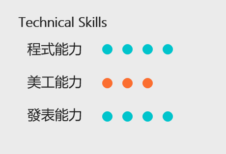
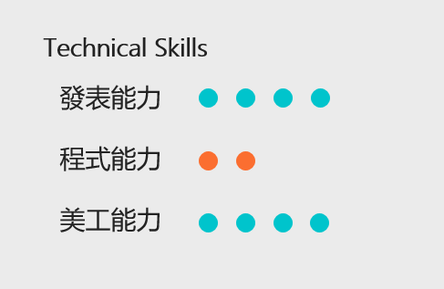
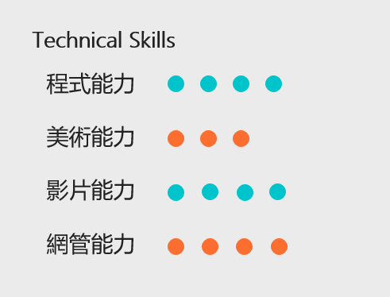
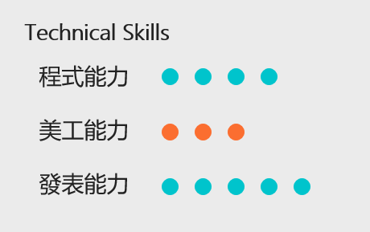
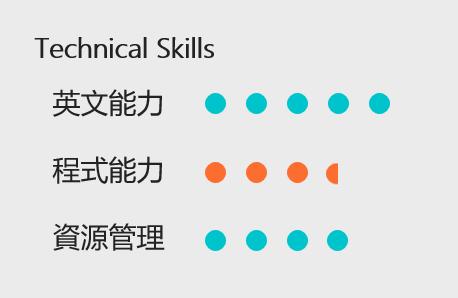

- 網頁前後端開發 ( HTML、PHP、JS.. )，以Laravel為熟悉開發工具
- C++
- JAVA
- R語言
經歷2016 新生知訊網程式設計組
2016.09~ 中央大學計算機中心Service Desk網頁工讀生
2017 台灣人工智慧年會X台灣資料科學年會志工
2017 資管嘉年華總召
2017 大數據學生團隊資料分析組

-ASP.NET網頁程式
-basic C programming
-basic Java programming
-Adobe Illustrator
-Adobe Premiere
經歷中大四中五校運動會主持人
中大社團聯展 主持人
中央資訊管理營 總召
中央全校新生營 主持人
校慶野餐同樂會 主持人

-資工課程(程式語言、作業系統、資料結構)
-C,C++,Java
-網頁技術(html,css,js,PHP,mySQL),Laravel框架
-SAP ABAP
-Adobe Primere, Photoshop
經歷2017.11~ 教務處教學發展處 自主微學分網站開發者
2016.10~2017.05 中央資管營網頁前後端開發者
2015.11~ 中央大學管院電算中心工讀生
2017.10~ 中央大學SAP 學生團隊HANA分析組-學員
2017.08 中央大學ios暑期營
2017.07 中央大學 SAP ABAP暑期營-講師
2017.06 噗浪網頁 & APP開發工程師實習錄取
2017.04 微軟Xamarin總部工作坊 (使用C#)-學員
2017.04 微軟Machine Learning 總部工作坊-學員
2016.10-2017.06 中央大學SAP ABAP學生團隊
2016.10-2017.01 中央大學大數據資料視覺化學生團隊
2016 中央新生知訊網影音組(premiere)
2015-2017 參加sitcon、TDOH等學生年會
2015 系學會新聞部(ps,primere)
2015 中央資管營宣訪組(攝影/美術)

-系統開發軟體(HTML5)
-資工計概(C++)
-進階java
-剪輯(Sony Vegas
經歷2017.09~ ERP SAP 學生團隊 ABAP模組
2017.11.20 熱舞大賽主持人
2017.10.28 四中五校聯誼賽開幕式主持人
2017.09 社團聯展主持人
2017.09 校新生營主持人
2017.07 教育部大專女學生領導力培訓營
2016.11~2017.07 中央大學資管營課程組組長
2017.02~2017.06 飛遊網網頁、APP實習生
2017.05 校慶野餐音樂會主持人
2017.01~2017.02 台灣微軟微接班人計劃RDAA實習生
2016.10~2016.12 資管嘉年華公關組組長
2016.06~2017.02 教務處教育發展中心網頁管理
2016.09~2017.02 親善大使
2016.09 全校新生營主持人
2016.09 社團聯展主持人
2016.07 教育部大專女學生領導力培訓營
2015.11~2016.07 中央大學資管營輔員組
2015.11~2016.07 新生知訊網影音組(Sony Vegas)
2015.09~2016.06 系學會活動部
2015.10~2015.12 資管嘉年華公關組

- 英文(fluent) TOEIC 985
- 中央資管英語自學1051,1052 成果發表冠軍
- 基本程式能力 (java, R)
- 基本資安觀念 (數位鑑識[修習中], 平時自學)
- 基本剪輯影片能力 (openshot)
經歷106.6 ~ 中央資管系學會器材部部長
105.6 ~ 106.6 中央管樂低銅暨長號分部組長
105.6 ~ 106.6 中央管樂幹部(總務)
105.1 ~ 中央資管系壘數據蒐集暨分析組組長
023T中華民國海軍陸戰隊火箭彈兵合格結訓
